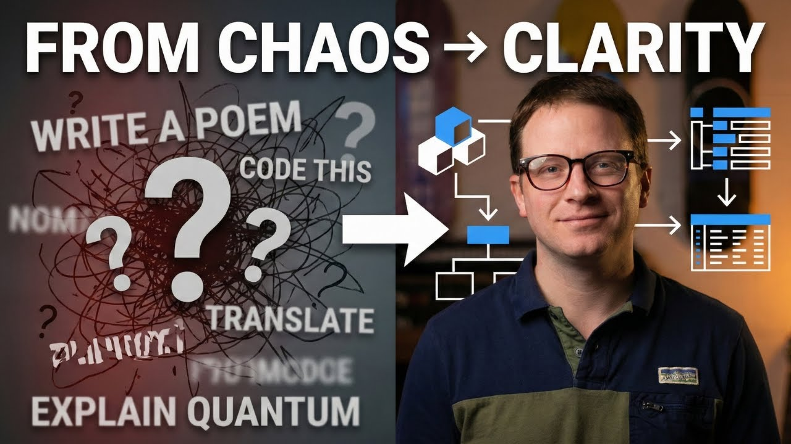

From chaos to clarity
A current workbench note about organizing complex work with AI.
Watch on YouTube ↗03 / Project archive
Films, teaching media, production notes, and community stories.

A current workbench note about organizing complex work with AI.
Watch on YouTube ↗
Camera language, continuity, editing, and production decisions students can explore.

A classroom profile built around observation, teacher voice, and the texture of a real school day.
Watch on YouTube ↗
A school-history piece that turns an archival newspaper story into a produced broadcast.
Watch on YouTube ↗
A school-community profile introducing the person behind a leadership role.
Watch on YouTube ↗The full current archive lives on YouTube while this collection is being organized.
Visit the channel ↗